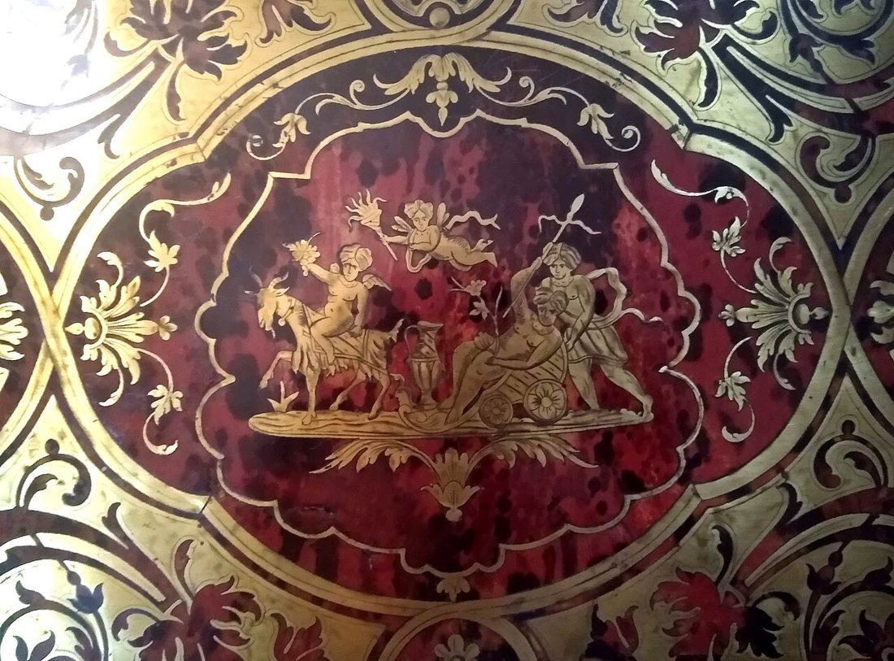
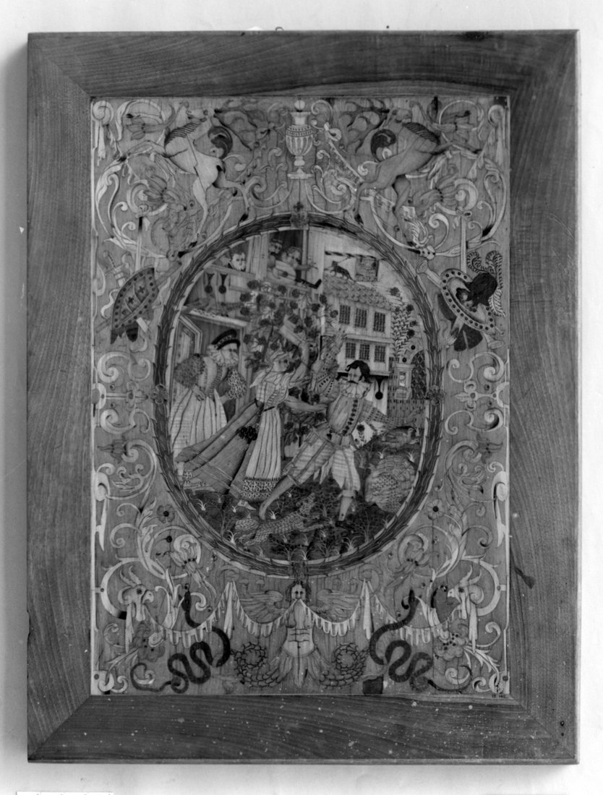
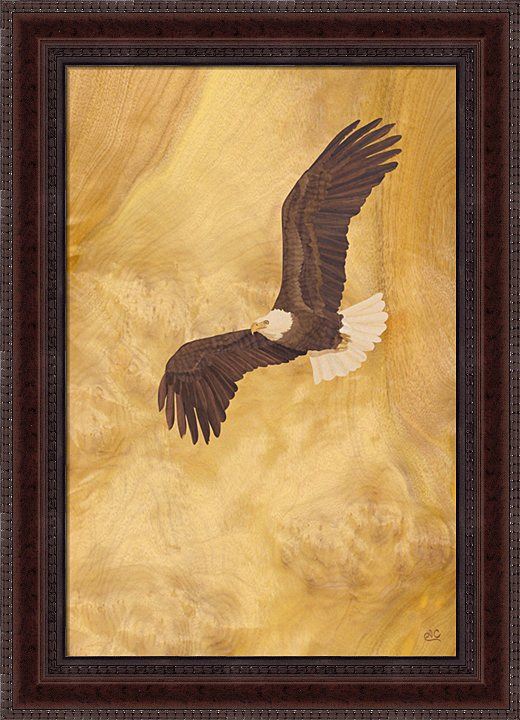
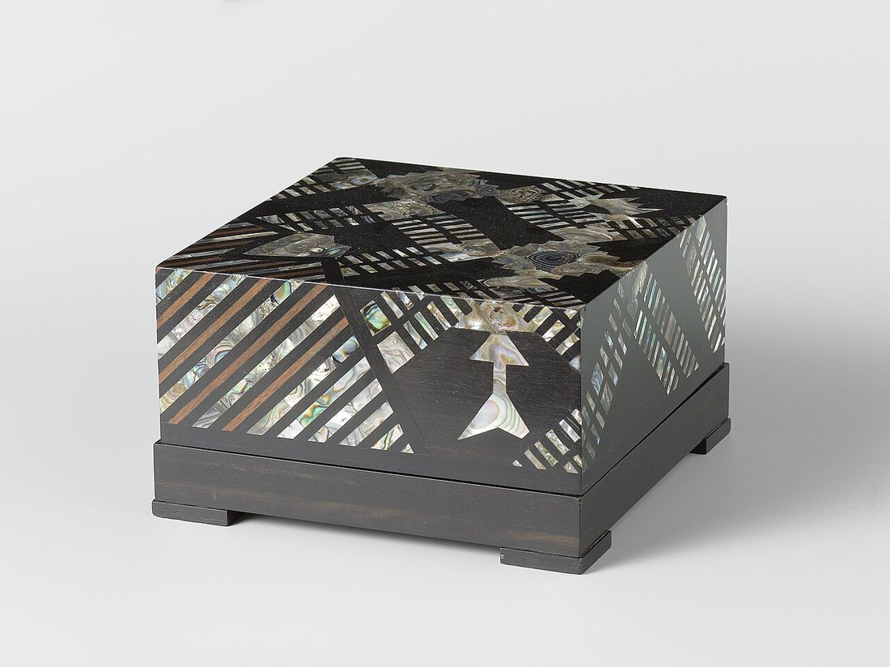

Көркем еңбек (ұлдар) · 2-бөлім · Ағаш өңдеу Art & Craft (Boys) · Section 2 · Woodworking Художественный труд (мальчики) · Раздел 2 · Обработка древесины
Ағаш мозаикасы және инкрустация
Wood Mosaic and Inlay (Intarsia)
Мозаика и инкрустация (интарсия)
Түрлі-түсті ағаш сынықтарынан сурет жинау өнері: интарсия, маркетри және инкрустация. The art of building a picture from coloured pieces of wood: intarsia, marquetry and inlay. Искусство собирать рисунок из кусочков цветного дерева: интарсия, маркетри и инкрустация.
Ағаштан салынған «сурет» деген не? What is a "picture" made of wood? Что такое «картина», набранная из дерева?
Мозаика — әр түрлі түсті және текстуралы ағаш бөлшектерінен өрнек немесе сурет құрастыру. Шебер бояуды қолданбайды: барлық реңктер табиғи — әртүрлі ағаш тұқымдарының өз түсі. Интарсия деп ағаш негізге ойылған ұяшықтарға дәл сондай қалыңдықтағы ағаш кесінділерін салуды айтады. Маркетри — жұқа ағаш қаптамасынан (шпон) сурет жинап, оны бұйым бетіне желімдеу. Инкрустация кезінде ағашқа басқа материал — сүйек, седеп, металл — кіргізіледі. Бұл әдістер ғасырлар бойы жиһазды, сандықтарды, есіктер мен музыкалық аспаптарды әсемдеуге қолданылып келеді. Wood mosaic means assembling an ornament or a picture from pieces of wood of different colour and grain. The craftsman uses no paint: every shade is natural — the true colour of a different species of timber. Intarsia sets shaped pieces of wood into pockets cut into a solid wooden ground, all of the same thickness. Marquetry builds the picture from thin sheets of veneer and glues it onto the surface of the object. Inlay embeds a different material — bone, mother-of-pearl, metal — into the wood. For centuries these techniques have decorated furniture, chests, doors and musical instruments. Мозаика по дереву — это набор орнамента или картины из кусочков дерева разного цвета и текстуры. Мастер не пользуется краской: все оттенки естественные — это собственный цвет разных пород древесины. Интарсия — это врезка фигурных кусочков дерева в гнёзда, выбранные в сплошной деревянной основе, причём все элементы одной толщины. Маркетри собирает рисунок из тонкого шпона и наклеивает его на поверхность изделия. Инкрустация — это вставка в дерево другого материала: кости, перламутра, металла. Веками эти приёмы украшали мебель, сундуки, двери и музыкальные инструменты.

Үш әдісті салыстыру Comparing the three techniques Сравнение трёх техник
| Признак | Интарсия | Маркетри | Инкрустация |
|---|---|---|---|
| Что вставляют | Кусочки массива дерева | Тонкий шпон (фанеровка) | Кость, перламутр, металл, камень |
| Основа | Сплошной деревянный щит | Любая ровная поверхность под оклейку | Дерево (реже металл) |
| Толщина вставок | Заметная, врезается в гнездо | Доли миллиметра | Зависит от материала |
| Главный инструмент | Стамеска, резец | Тонкий нож, лобзик | Резец, бормашина, штихель |
| Где встречается | Ренессансные панели, двери | Мебель XVII–XIX вв., шкатулки | Музыкальные инструменты, оружие |
| Белгісі | Интарсия | Маркетри | Инкрустация |
|---|---|---|---|
| Не салынады | Тұтас ағаш бөлшектері | Жұқа шпон (қаптама) | Сүйек, седеп, металл, тас |
| Негіз | Тұтас ағаш қалқан | Қапталатын кез келген тегіс бет | Ағаш (сирек металл) |
| Қалыңдығы | Байқалады, ұяға ойылады | Миллиметрдің бөлігі | Материалға байланысты |
| Басты құрал | Қашау, кескіш | Жұқа пышақ, шиыршық ара | Кескіш, бормашина, штихель |
| Қайда кездеседі | Ренессанс панельдері, есіктер | XVII–XIX ғ. жиһазы, сандықшалар | Музыка аспаптары, қару |
| Feature | Intarsia | Marquetry | Inlay |
|---|---|---|---|
| What is set in | Pieces of solid wood | Thin veneer sheets | Bone, pearl, metal, stone |
| Ground | Solid wooden panel | Any flat surface to be veneered | Wood (rarely metal) |
| Thickness | Noticeable, set into a pocket | Fractions of a millimetre | Depends on the material |
| Main tool | Chisel, gouge | Thin knife, fretsaw | Burin, rotary tool, graver |
| Where seen | Renaissance panels, doors | 17th–19th c. furniture, boxes | Musical instruments, weapons |
Маркетри суретін қалай жинайды How a marquetry picture is built Как собирают картину маркетри
Эскиз бен трафарет. Сурет қағазға салынып, әр бөлік нөмірленеді — олардың түсі мен ағаш тұқымы белгіленеді. Drawing and pattern. The design is drawn on paper and each part is numbered, marking its colour and wood species. Эскиз и шаблон. Рисунок переносят на бумагу, каждую деталь нумеруют, отмечая её цвет и породу дерева.
Шпонды таңдау. Әр бөлікке текстурасы мен реңі сәйкес келетін қаптама таңдалады: емен, жаңғақ, алмұрт, қарағай түйіні. Choosing veneer. For each part a veneer with the right grain and tone is chosen: oak, walnut, pear, burl. Подбор шпона. Под каждую деталь подбирают шпон с нужной текстурой и тоном: дуб, орех, груша, кап.
Кесу. Жұқа пышақпен немесе шиыршық арамен бөліктер контур бойынша дәл кесіледі — олар бір-біріне саңылаусыз жабысуы керек. Cutting. With a thin knife or a fretsaw the parts are cut exactly along the outline — they must fit together with no gaps. Резка. Тонким ножом или лобзиком детали вырезают точно по контуру — они должны сходиться без зазоров.
Жинау. Бөліктер «суретше» түрінде желімді қағазға беттеп жиналады, дәл мозаика сияқты. Assembly. The pieces are laid face-down onto gummed paper to form the "picture", exactly like a mosaic. Сборка. Детали выкладывают лицом вниз на клеевую бумагу, собирая «картинку», точно как мозаику.
Желімдеу. Жиналған сурет негізге пресс астында желімделеді, артық қағаз кейін аршылады. Gluing. The assembled picture is glued onto the ground under a press; the paper is peeled off afterwards. Приклеивание. Собранную картину под прессом наклеивают на основу, бумагу потом снимают.
Тегістеу мен лак. Бет ұқыпты ажарланып, лакпен немесе маймен қапталады — ағаштың түсі ашылады. Sanding and finish. The surface is carefully sanded and coated with lacquer or oil — the colour of the wood comes alive. Шлифовка и лак. Поверхность аккуратно шлифуют и покрывают лаком или маслом — цвет дерева раскрывается.
Шебердің «бояулары» — ағаш тұқымдары The craftsman's "paints" — wood species «Краски» мастера — породы дерева
Ашық, біркелкі — жарық бөліктерге. Light and even — for bright areas. Светлая, ровная — для светлых участков.
Жылы қоңыр, әдемі текстура. Warm brown, beautiful grain. Тёплый коричневый, красивая текстура.
Қызыл реңк — екпін үшін. Reddish tone — for accents. Красноватый тон — для акцентов.
Терең қара — контур мен көлеңке. Deep black — outlines and shadow. Глубокий чёрный — контур и тень.
Шеберлік галереясы (үлкейту үшін басыңыз) Gallery of masterpieces (tap to enlarge) Галерея образцов (нажмите, чтобы увеличить)



Шеберхана ережелері мен кеңестер Workshop rules and tips Правила мастерской и советы
Қауіпсіз пышақSafe knifeБезопасный нож
Өткір пышақты өзіңнен әрі қарай тарт; бос қолды жүзден алыс ұста. Cut away from yourself with a sharp knife; keep the free hand behind the blade. Режь острым ножом от себя; свободную руку держи позади лезвия.
Дәлдік — бәрінен маңыздыPrecision firstТочность важнее всего
Кішкене саңылау да дайын суретте байқалады — асықпай кес. Even a tiny gap shows in the finished picture — cut slowly. Даже маленький зазор виден на готовой картине — режь не спеша.
Текстураны сақтаRespect the grainУчитывай текстуру
Ағаш талшығының бағыты суреттің «жанын» береді — оны ескер. The direction of the grain gives the picture its "life" — plan it. Направление волокон придаёт картине «жизнь» — планируй его.